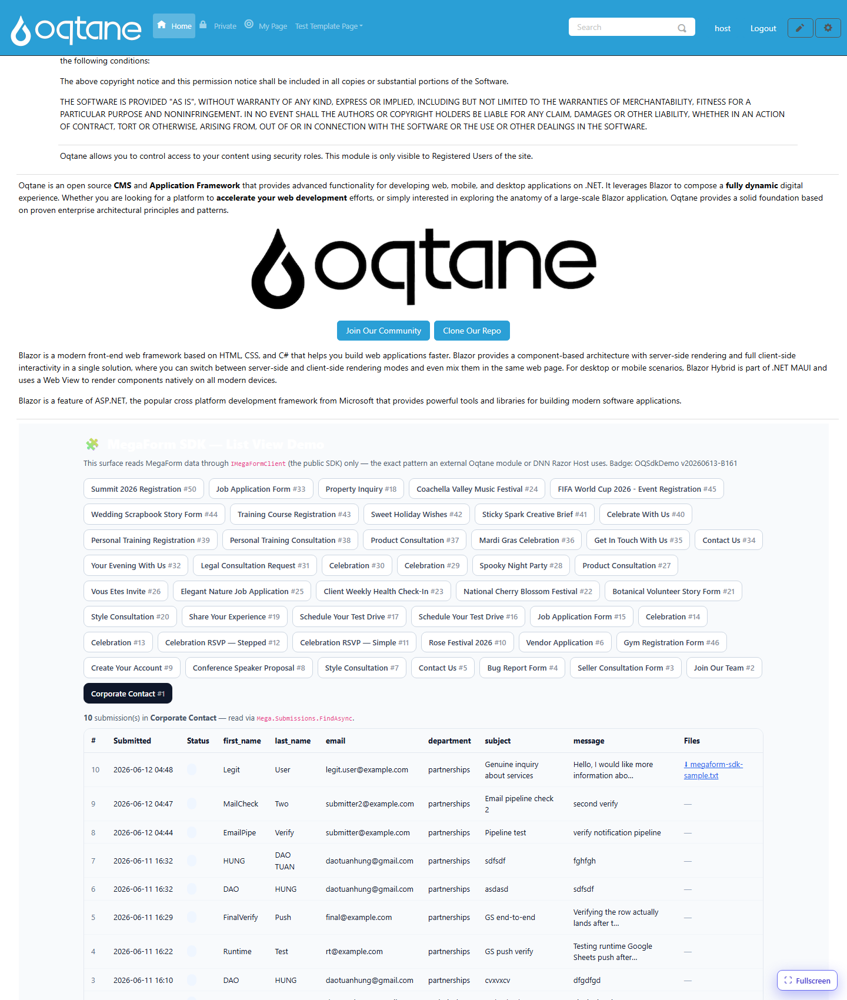

File Download
The Files API (IFileApi) lets you list the files
uploaded against a submission and stream their bytes back to a caller — without ever exposing
the physical storage path. The SDK reads metadata from the file repository and the bytes from
the host's storage service.
List a submission's files (metadata only)
IReadOnlyList<FileDto> files =
await client.Files.ListForSubmissionAsync(submissionId: 10, scope);
foreach (var f in files)
{
// f.FileId, f.FieldKey, f.FileName, f.ContentType, f.SizeBytes, f.UploadedOnUtc
}
FileDto is metadata only — there is no StoredPath
property, by design, so the on-disk layout never leaks to consumers.
Open (download) a file
OpenAsync returns the bytes + name + content type, or
null if the file is not found:
MegaFormFileContent? file = await client.Files.OpenAsync(
submissionId: 10, fileId: 1, scope);
if (file is null) return NotFound();
// file.FileName, file.ContentType, file.Content (byte[])
Wiring a download endpoint
The pattern is identical on every host: take submissionId + fileId, call OpenAsync, and
return the bytes as an attachment.
ASP.NET Core / Oqtane controller
[HttpGet("Download")]
[Authorize(Roles = RoleNames.Admin)]
public async Task<IActionResult> Download(int submissionId, int fileId)
{
var scope = new MegaFormScope { PortalId = _alias.SiteId };
var content = await _mega.Files.OpenAsync(submissionId, fileId, scope);
if (content is null) return NotFound();
return File(content.Content, content.ContentType, content.FileName);
}
DNN WebAPI controller
[HttpGet]
[ActionName("Download")]
public async Task<HttpResponseMessage> Download(int submissionId, int fileId)
{
var scope = new MegaFormScope { PortalId = PortalSettings.PortalId };
var content = await DnnServiceLocator.Instance.Mega.Files
.OpenAsync(submissionId, fileId, scope);
if (content is null) return Request.CreateResponse(HttpStatusCode.NotFound);
var resp = new HttpResponseMessage(HttpStatusCode.OK)
{
Content = new ByteArrayContent(content.Content)
};
resp.Content.Headers.ContentType =
new MediaTypeHeaderValue(content.ContentType);
resp.Content.Headers.ContentDisposition =
new ContentDispositionHeaderValue("attachment") { FileName = content.FileName };
return resp;
}
Rendering the link
In your list view, point each file link at your download endpoint:
<a href="/api/MegaForm/SdkDemo/Download?submissionId=10&fileId=1">⬇ resume.pdf</a>
The result — note the ⬇ megaform-sdk-sample.txt link in the Files column, served
end-to-end through IMegaFormClient.Files.OpenAsync:

Security notes
- Always authorize your download endpoint. The SDK does not enforce per-user permissions — it streams whatever file id you ask for. Gate the endpoint (admin, or check that the file's submission belongs to the current user).
- The storage service resolves the path under a fixed root and rejects
..traversal, so a forgedfileId/path cannot escape the uploads directory. OpenAsyncreturnsnull(not an exception) for missing files — translate that to404.